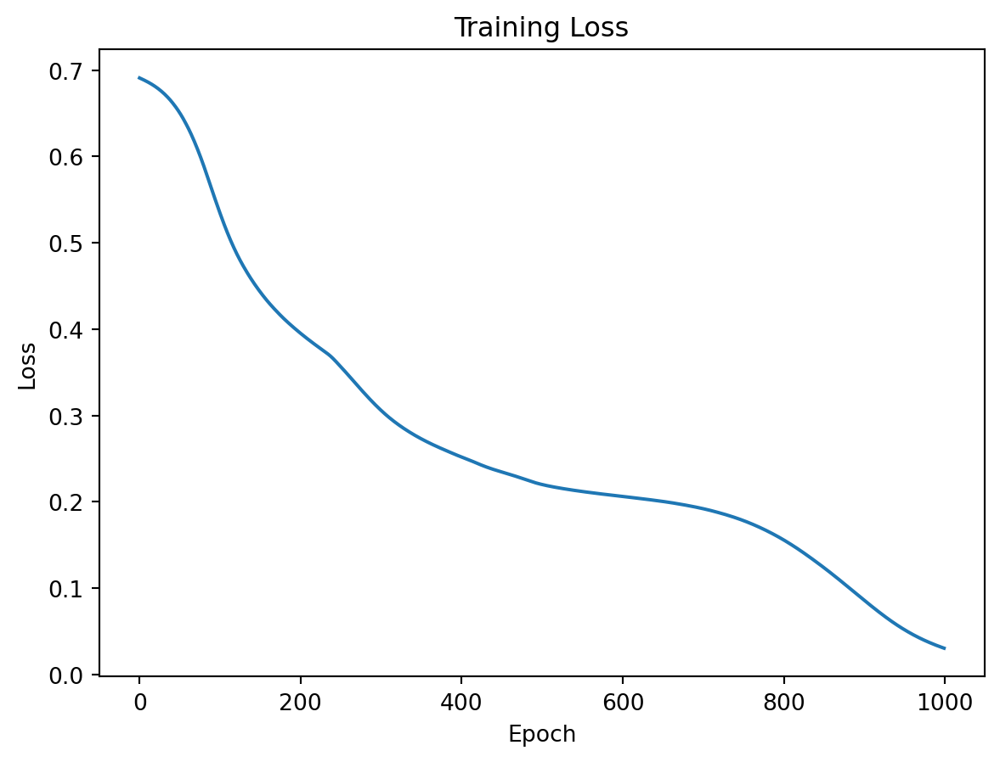
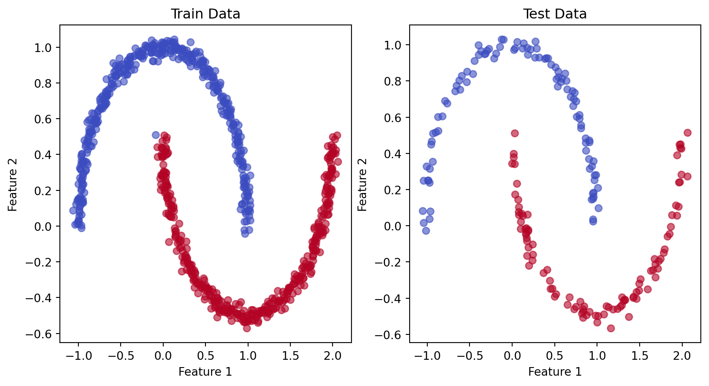
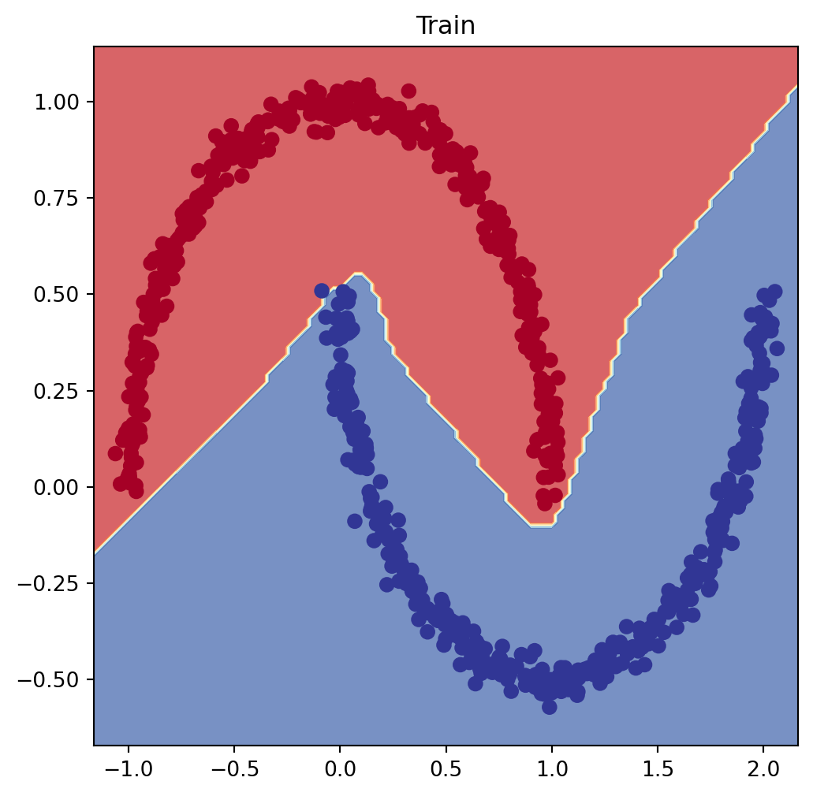
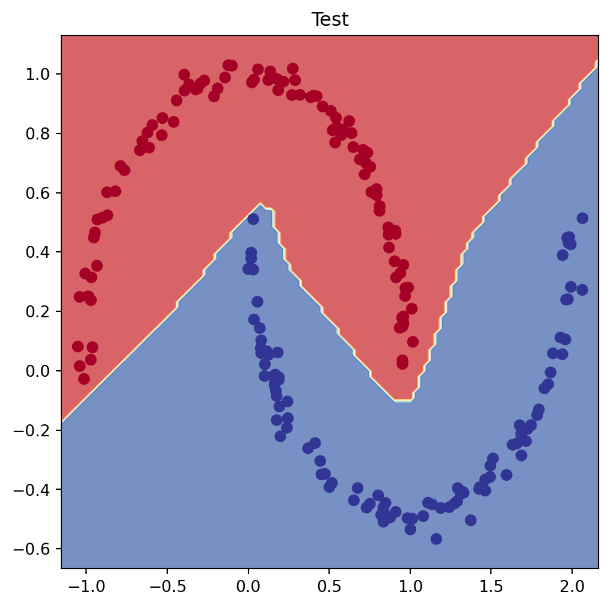

import torch
import torch.nn as nn
import torch.optim as optim
from sklearn.datasets import make_moons
from sklearn.model_selection import train_test_split
import matplotlib.pyplot as plt
import warnings
# Suppress all RuntimeWarnings
warnings.filterwarnings('ignore', category=RuntimeWarning)# Generate the dataset
X, y = make_moons(n_samples=1000, noise=0.03, random_state=42)
# Split the dataset into training and test sets
X_train, X_test, y_train, y_test = train_test_split(X, y, test_size=0.2, random_state=42)
# Convert the data to PyTorch tensors
X_train = torch.tensor(X_train, dtype=torch.float32)
X_test = torch.tensor(X_test, dtype=torch.float32)
y_train = torch.tensor(y_train, dtype=torch.float32).unsqueeze(1) # Change to (N, 1)
y_test = torch.tensor(y_test, dtype=torch.float32).unsqueeze(1) # Change to (N, 1)# Define the neural network model
class MoonModel(nn.Module):
def __init__(self):
super(MoonModel, self).__init__()
self.layer_1 = nn.Linear(2, 10)
self.layer_2 = nn.Linear(10, 10)
self.layer_3 = nn.Linear(10, 10)
self.output = nn.Linear(10, 1) # Single output neuron
def forward(self, x):
x = torch.relu(self.layer_1(x))
x = torch.relu(self.layer_2(x))
x = torch.relu(self.layer_3(x))
x = self.output(x)
return x
model = MoonModel()# Define the loss function and the optimizer
criterion = nn.BCEWithLogitsLoss()
optimizer = optim.Adam(model.parameters(), lr=0.001)# Train the model
epochs = 1000
losses = []
for epoch in range(epochs):
model.train()
optimizer.zero_grad()
outputs = model(X_train)
loss = criterion(outputs, y_train)
loss.backward()
optimizer.step()
if (epoch+1) % 100 == 0:
print(f'Epoch [{epoch+1}/{epochs}], Loss: {loss.item():.4f}')
losses.append(loss.item())Epoch [100/1000], Loss: 0.5367
Epoch [200/1000], Loss: 0.3958
Epoch [300/1000], Loss: 0.3067
Epoch [400/1000], Loss: 0.2522
Epoch [500/1000], Loss: 0.2202
Epoch [600/1000], Loss: 0.2062
Epoch [700/1000], Loss: 0.1922
Epoch [800/1000], Loss: 0.1563
Epoch [900/1000], Loss: 0.0866
Epoch [1000/1000], Loss: 0.0304# Plot the training loss
plt.plot(losses)
plt.xlabel('Epoch')
plt.ylabel('Loss')
plt.title('Training Loss')
plt.show()
model.eval()
with torch.no_grad():
train_outputs = model(X_train)
test_outputs = model(X_test)
train_pred = torch.round(torch.sigmoid(train_outputs))
test_pred = torch.round(torch.sigmoid(test_outputs))
train_accuracy = (train_pred.eq(y_train).sum() / float(y_train.shape[0])).item()
test_accuracy = (test_pred.eq(y_test).sum() / float(y_test.shape[0])).item()
print(f'Train Accuracy: {train_accuracy*100:.2f}%')
print(f'Test Accuracy: {test_accuracy*100:.2f}%')
# Plot the results
plt.figure(figsize=(10, 5))
plt.subplot(1, 2, 1)
plt.title('Train Data')
plt.scatter(X_train[:, 0], X_train[:, 1], c=train_pred[:, 0], cmap='coolwarm', alpha=0.6)
plt.xlabel('Feature 1')
plt.ylabel('Feature 2')
plt.subplot(1, 2, 2)
plt.title('Test Data')
plt.scatter(X_test[:, 0], X_test[:, 1], c=test_pred[:, 0], cmap='coolwarm', alpha=0.6)
plt.xlabel('Feature 1')
plt.ylabel('Feature 2')
plt.show()Train Accuracy: 99.87%
Test Accuracy: 100.00%
# Function 1: plot decision boundary
import numpy as np
def plot_decision_boundary(model: torch.nn.Module, X: torch.Tensor, y: torch.Tensor):
"""
Plots decision boundaries of model predictions on X in comparison to y.
"""
# Move model and data to CPU
model.to("cpu")
X, y = X.to("cpu"), y.to("cpu")
# Setup grid for plotting decision boundaries
x_min, x_max = X[:, 0].min() - 0.1, X[:, 0].max() + 0.1
y_min, y_max = X[:, 1].min() - 0.1, X[:, 1].max() + 0.1
xx, yy = np.meshgrid(np.linspace(x_min, x_max, 101), np.linspace(y_min, y_max, 101))
# Prepare data for prediction
X_to_pred_on = torch.from_numpy(np.c_[xx.ravel(), yy.ravel()]).float()
# Make predictions
model.eval()
with torch.no_grad():
y_logits = model(X_to_pred_on)
# Adjust logits to prediction labels
if len(torch.unique(y)) > 2:
y_pred = torch.softmax(y_logits, dim=1).argmax(dim=1) # multi-class
else:
y_pred = torch.round(torch.sigmoid(y_logits)) # binary
# Reshape predictions and plot
y_pred = y_pred.reshape(xx.shape).numpy()
plt.contourf(xx, yy, y_pred, cmap=plt.cm.RdYlBu, alpha=0.7)
plt.scatter(X[:, 0], X[:, 1], c=y, s=40, cmap=plt.cm.RdYlBu)
plt.xlim(xx.min(), xx.max())
plt.ylim(yy.min(), yy.max())
plt.show()
# Function 2: plot predictions
def plot_predictions(train_data, train_labels, test_data, test_labels, predictions=None):
"""
Plots training and test data and compares predictions if provided.
"""
#plt.figure(figsize=(10, 7))
# Plot training data
plt.scatter(train_data, train_labels, c="b", s=4, label="Training data")
# Plot test data
plt.scatter(test_data, test_labels, c="g", s=4, label="Testing data")
if predictions is not None:
# Plot predictions on test data
plt.scatter(test_data, predictions, c="r", s=4, label="Predictions")
# Display legend
plt.legend(prop={"size": 14})
plt.show()# Plot decision boundaries for training and test sets
plt.figure(figsize=(6, 6))
plt.title("Train")
plot_decision_boundary(model, X_train, y_train)
plt.figure(figsize=(6, 6))
plt.title("Test")
plot_decision_boundary(model, X_test, y_test)
